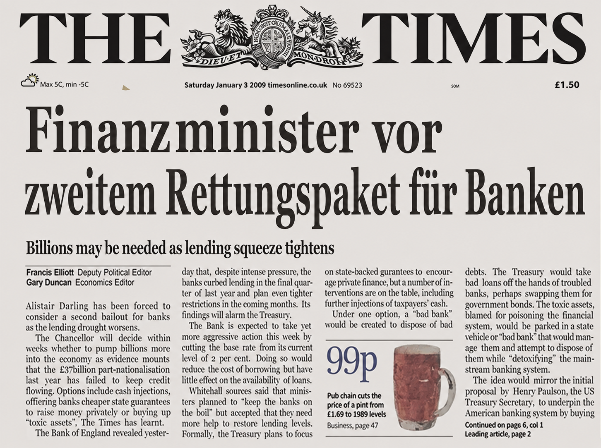

Der Staat rettet Banken. Wer rettet dich?

Eine Schlagzeile aus 2009. Der Anfang einer Idee.

In der Finanzkrise übernahmen Staaten die Verluste privater Banken. Die Kosten trugen am Ende alle, über Staatsschulden und Inflation.
Im Jänner 2009 startete Satoshi Nakamoto ein Geldsystem ohne zentrale Stelle, die es retten, ändern oder abschalten kann. Die Regeln stehen im Protokoll und gelten für alle gleich.
Bitcoin Austria ist ein gemeinnütziger Verein. Wir erklären Technologie und ökonomische Zusammenhänge, ohne etwas zu verkaufen. Wissen statt Werbung.
Komm vorbei und bilde dir selbst ein Urteil. Du brauchst kein Vorwissen, denn wir beginnen bei den Grundlagen. Danach ist ausreichend Zeit für Fragen.
{{event.timeRange}}
Entstehung, Grundlagen und Mythen im Faktencheck
{{event.venue}}
{{event.address}}
{{event.postalCity}}

… liegt das nicht an dir. Gleiche Arbeit, gleicher Lohn, und am Monatsende bleibt weniger übrig als noch vor fünf Jahren.
Kommen mehr Euro in Umlauf, ist jeder einzelne weniger wert. Wer spart, zahlt am Ende drauf.
Bitcoin ist Geld, das niemand vermehren kann. Auch keine Notenbank.
21 Millionen. Fest im Protokoll.